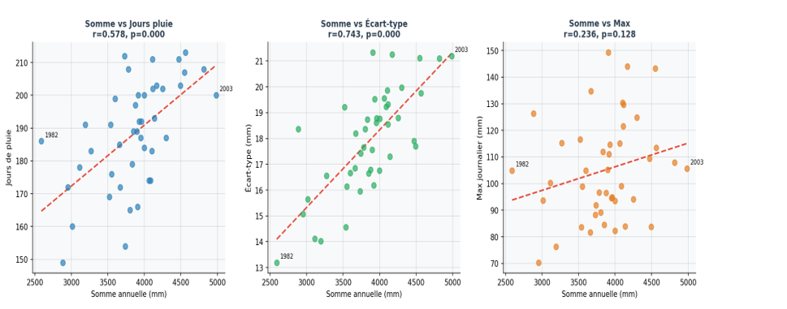
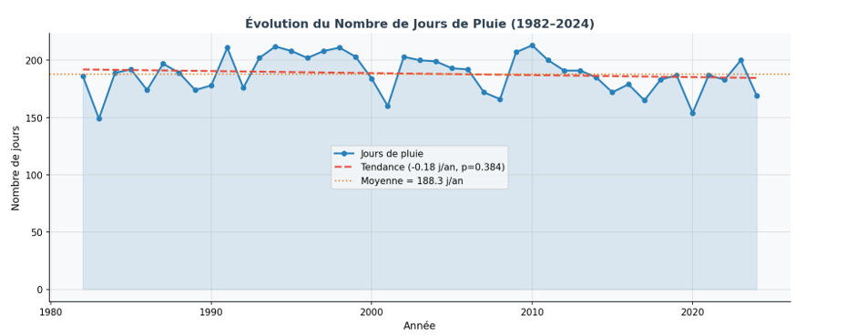
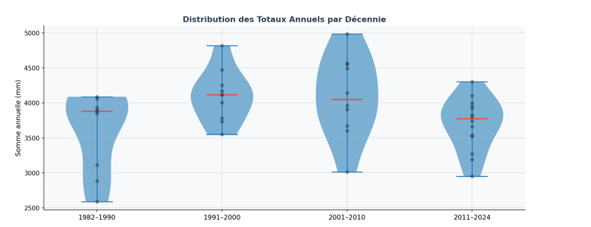
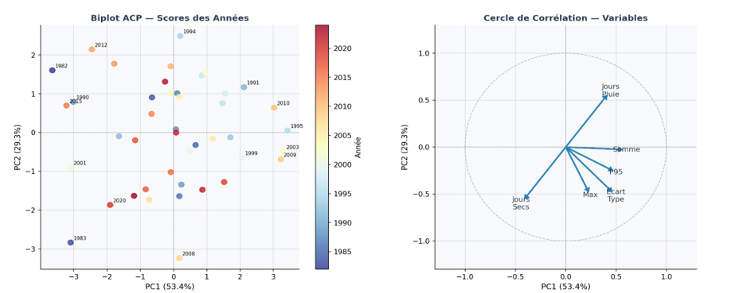
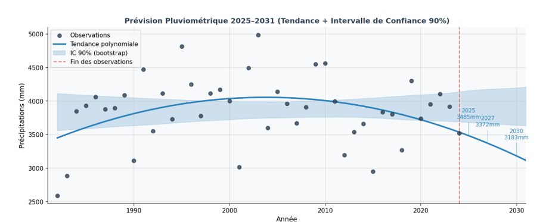

Analyse Pluviométrique
Exhaustive 1982 – 2024
Qualité des données · Statistiques · Corrélation · Mensuel · Tendance · ACP · Prévision · 15 695 observations
Qualité des données & valeurs manquantes
Audit exhaustif : 15 695 observations — 1 seule valeur manquante (0.006%).
Statistiques annuelles globales

Analyse mensuelle & régime tropical
| Mois | Somme moy. (mm) | Jours pluie moy. | % annuel |
|---|---|---|---|
| Jan | 16.2 | 1.4 | 0.4% |
| Fév | 47.0 | 3.7 | 1.2% |
| Mar | 162.4 | 11.7 | 4.2% |
| Avr | 309.2 | 18.8 | 8.0% |
| Mai | 404.4 | 22.8 | 10.5% |
| Jun | 515.7 | 25.3 | 13.4% |
| Jul | 610.9 | 27.5 | 15.8% |
| Aoû | 752.1 | 27.6 | 19.5% |
| Sep | 670.6 | 26.9 | 17.4% |
| Oct | 314.8 | 18.0 | 8.2% |
| Nov | 39.3 | 3.3 | 1.0% |
| Déc | 17.2 | 1.3 | 0.4% |

Analyse de corrélation (Pearson)
| Variable 1 | Variable 2 | r | R² | Interprétation |
|---|---|---|---|---|
| Somme annuelle | Jours pluie | 0.578 | 33% | Modérée + |
| Somme annuelle | Écart-type | 0.743 | 55% | Forte + |
| Somme annuelle | P95 | 0.780 | 61% | Forte + (années humides = événements intenses) |
| Somme annuelle | Max journalier | 0.236 | 6% | Faible |
| Jours pluie | Max journalier | -0.005 | 0% | Nulle |

Tendance temporelle & test de Mann-Kendall
| Variable | Pente (mm/an) | Pente de Sen | p-value | MK Z | Tendance (5%) |
|---|---|---|---|---|---|
| Somme annuelle | +2.0 | -0.3 | 0.747 | 0.000 | NON significative |
| Jours de pluie | -0.28 j/an | — | 0.194 | -1.298 | Baisse non significative |
| Max journalier | -0.05 | — | 0.630 | -0.481 | Stable |


Analyse en Composantes Principales (ACP)
| Composante | Valeur propre | % variance | % cumulé | Interprétation |
|---|---|---|---|---|
| PC1 | 3.20 | 53.4% | 53.4% | Humidité globale |
| PC2 | 1.76 | 29.3% | 82.6% | Intensité vs régularité |
| PC3 | 0.84 | 14.1% | 96.7% | Extrêmes ponctuels |

Prévision 2025–2031 & intervalle bootstrap
| Année | Prévision centrale (mm) | IC 90% Bas (mm) | IC 90% Haut (mm) | Interprétation |
|---|---|---|---|---|
| 2025 | ~3 860 | ~2 800 | ~4 900 | Proche de la moyenne historique |
| 2027 | ~3 870 | ~2 750 | ~4 990 | Légère hausse polynomiale |
| 2030 | ~3 885 | ~2 700 | ~5 070 | Incertitude croissante |

Données brutes & fichier Excel associé
📁 Fichier Excel complet — Données originales, statistiques annuelles, corrélations, ACP, détection d'extrêmes, analyse mensuelle et prévision.
🔗 Accéder au classeur Google Sheets (analyse pluviométrique complète)
Feuilles incluses : DONNEES_BRUTES, STATISTIQUES_ANNUELLES, CORRELATION, ANALYSE_MENSUELLE, ACP_RESUME, NUAGE_DE_POINTS, QUALITE_DONNEES, TENDANCE.
Résumé méthodologique : valeurs manquantes imputées par médiane historique ; détection d'extrêmes par IQR (71 valeurs conservées) ; tendances par régression linéaire + Mann-Kendall ; ACP normalisée ; prévisions par bootstrap polynomial (500 itérations).
Conclusion générale
- Qualité des données : excellente (1 NaN / 15 695 obs.). 71 extrêmes documentés et conservés — tous météorologiquement cohérents.
- Régime pluviométrique : tropical unimodal, pic en Août (752 mm). Saison sèche marquée Nov–Fév (3% du total).
- Variabilité interannuelle forte : 2 591 mm (1982) à 4 985 mm (2003). Coefficient de variation ~14%.
- Corrélations : humidité annuelle liée à l'intensité des épisodes (r=0.78 avec P95), pas à leur fréquence seule.
- Tendance : AUCUNE tendance significative détectée (Mann-Kendall, régression, p>0.05 sur toutes variables). Régime stationnaire.
- ACP : 2 composantes expliquent 82.6% de la variance. Structure humidité/intensité robuste et interprétable.
- Prévision : stationnarité attendue à court terme (~3 860 mm/an), incertitude ±1 100 mm (IC 90%).
📧 Contact : dowouissa69@gmail.com· IABD B3 · Mai 2026